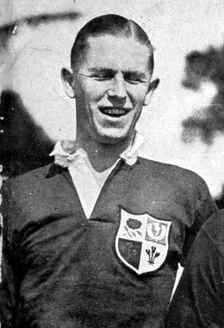

20th century · People & Families
Sir Carl Aarvold
1907–1991
The Old Bailey knew him as Recorder of London. Westhumble remembered the neighbour who chaired a stormy village meeting and cooked breakfast for friends after a dance.
A life remembered inside St Michael & All Angels.

Breakfast at Foxbury
After a Westhumble Association dinner dance at the Burford Bridge Hotel, Sir Carl Aarvold cooked breakfast sausages for friends at Foxbury. The April 1991 parish obituary remembers that small act of hospitality alongside the warmth he showed to the people who brought the post, delivered the milk, collected the rubbish and tended the garden. Local historian Ronald Shepperd dates Aarvold’s arrival at Foxbury to 1934. [2] [8] [10]
The same tribute recalls a tense Association meeting at the Stepping Stones. A heckler spoke at length in favour of building twenty council houses in the field opposite. Aarvold, who was in the chair, let him finish. His entire reply, as the obituary remembered it, was “InDEED!” [2]
From Durham School to England


Born in Hartlepool on 7 June 1907, Carl Douglas Aarvold went to Durham School. A school report from March 1925 records that he took over as captain after Christmas. The report follows the chances he made for other players and singles out the pace of his attack. At Emmanuel College, Cambridge, he won four rugby Blues and played in four successive Varsity Match wins. He also won the 220-yard low hurdles at the university’s senior sports meeting in 1927. [6] [14] [12] [15]
He scored eight tries in four internationals on the 1927 tour of Argentina. He made his England debut against Australia at Twickenham and was part of the 1928 Grand Slam side. On the 1930 tour of New Zealand and Australia he captained the British side in eight matches and played in five Tests. His old school recorded in March 1932 that he had captained England throughout the season. He finished with sixteen England caps. [6] [12] [16]
The official Lions profile records his tours, England caps and Test performances. Its reference to the Kray twins is discussed below.
Aarvold on tour in Australia
Getty’s catalogue identifies Aarvold tackling at the Sydney Cricket Ground. Rights-managed editorial photograph.
View Aarvold’s rugby photograph at Getty ImagesSir Carl Aarvold in 1958
Portrait dated 13 February 1958. Evening Standard / Hulton Archive / Getty Images. Rights-managed editorial photograph.
View the 1958 photograph at Getty ImagesRoyal Artillery service
During the Second World War Aarvold served with the Royal Artillery in the Territorial Army. The June 1945 Birthday Honours list records him as a temporary lieutenant-colonel and appoints him an Officer of the Order of the British Empire in the military division. The 1968 honours notice also lists his Territorial Decoration, abbreviated T.D. [9] [7]
The Recorder’s work
Aarvold entered the Inner Temple in 1926 and was called to the Bar on 17 November 1932. After the war he joined the North-Eastern Circuit. The Inner Temple records him becoming Common Serjeant of the City of London in 1954, a Bencher of the Inn in 1959 and Recorder of London in 1964. He remained Recorder until 1975. The 1968 New Year Honours list announced his knighthood. [17] [12] [7]
A statutory instrument shows another side of the Recorder’s work. In May 1967 Aarvold made procedural rules for original civil actions in the Mayor’s and City of London Court, with the concurrence of the Rule Committee of the Supreme Court. The rules took effect that July. [18]
In 1973 Aarvold, Sir Denis Hill and G. P. Newton reported on how patients subject to special restrictions were discharged and supervised. They proposed an independent board to advise the Home Secretary on difficult cases involving discharge or transfer from special hospitals. Parliament later confirmed that the board was set up that September. [19] [20]
What the records say about the Kray trials
The Lions player profile associates Aarvold with a Kray twins trial. The Inner Temple archivists examined the claim about a 1965 case and could find no firm evidence that he presided. Contemporary reporting identifies Mr Justice Melford Stevenson as the judge in the separate 1969 Old Bailey murder trial. Aarvold’s role in the earlier proceedings remains unverified. [6] [17] [21]
The work of village life
A deed dated 26 March 1956 appointed Aarvold a custodial trustee of Mickleham Village Hall. The hall’s history records him as a continuing trustee in 1961, 1968 and 1970, and as retiring in October 1978. The custodial trustees held the hall property in trust. [3]
The parish tribute also remembers him serving on Dorking Urban District Council and the National Trust’s Box Hill Management Committee, and helping campaigns to raise money for the parish church’s restoration. The Box Hill School Trust’s register separately records his directorship, which ended on 17 March 1991. [2] [5]
Westhumble, in his own words
On 3 September 1981, as president of the Westhumble Association, Aarvold signed the foreword to Ronald Shepperd’s The Manor of Wistomble. The Association published the book the following year. Aarvold thanked Shepperd for showing residents how the places they knew had come to be and hoped he would go on to write about Norbury, Polesden, Fredley and Mickleham. [4]
He ended with a matter of village spelling. Readers could go back to the old name Wistomble, he said, but he had no time for the two-word West Humble. Westhumble, as one word, was the place he was proud to call home. [4]
Family and life beyond the bench
In July 1934 he married Noeline Hill, the year Shepperd places his arrival at Foxbury. The contemporary school notice and a later genealogy give different days for the wedding. A 1947 notice in the same school magazine records the arrival of their third son. [22] [24] [10] [23]
Years after his last England match, Aarvold was still a familiar figure in sport. Shepperd remembered seeing him at Wimbledon trophy presentations as president of the Lawn Tennis Association. A press photograph from the Getty archive also shows him with association secretary S. B. Reay in a discussion about the Davis Cup. [10] [26]
Aarvold and the Davis Cup
A Getty editorial photograph of Aarvold and S. B. Reay. Rights-managed photograph.
View the Davis Cup photograph at Getty ImagesRemembered with love and affection
The parish tribute remembers Aarvold helping to raise money for the restoration of St Michael’s. The tablet inside the church gives that work a local setting, beside the public roles for which he was known further afield. [2] [1]
Aarvold died on 17 March 1991. At the thanksgiving service on 25 March, his successor as Recorder, Sir James Miskin, gave the address. Aarvold’s sons read from Revelation and from Henry Scott Holland. Afterwards, the tribute recalls, many of the congregation accepted an invitation back to Foxbury. [2]
The oval tablet at St Michael’s calls him “a staunch supporter and lifelong friend of this community”. Its closing lines, attributed on the stone to H. Belloc, place laughter and friendship above winning. [1]

Read the full memorial inscription
The inscription is set out below in reading order.
Sources & further reading
- Sir Carl Aarvold’s memorial at St Michael and All Angels
Photograph supplied for this feature. The tablet gives his years and public roles, remembers his local friendship and attributes its closing lines to H. Belloc.
- Mickleham Parish Magazine, April 1991 — Sir Carl Aarvold OBE
Contemporary parish tribute, available as a Word document through the Mickleham & Westhumble Local History Group. It records local recollections and the thanksgiving service.
- Mickleham Village Hall History of Buildings and Grounds, Addendum 1
Page 25 lists the custodial trustees from the deeds of appointment.
- Ronald Shepperd, The Manor of Wistomble — foreword
Printed pages iii–iv. Aarvold signed the foreword on 3 September 1981. The copyright page dates first publication by the Westhumble Association to 1982.
- Companies House — Box Hill School Trust Limited, officers
The register names Sir Carl and James Hillary Aarvold separately and records the end of Sir Carl’s directorship on 17 March 1991.
- British & Irish Lions — Carl Aarvold
The player record gives his life dates, tours and 16 England caps.
- The London Gazette — New Year Honours, 1968
The honours list names Carl Douglas Aarvold, Recorder of the City of London, among the Knights Bachelor.
- The London Gazette — Deputy Lieutenants of Surrey, 1973
The appointment notice records his Westhumble home as Foxbury.
- The London Gazette — military honours, June 1945
The military OBE list names Aarvold as a temporary lieutenant-colonel in the Royal Artillery, Territorial Army.
- Ronald Shepperd, The Manor of Wistomble — Foxbury and Wimbledon
Printed page 87 records Aarvold’s arrival at Foxbury in 1934 and his appearances at Wimbledon trophy ceremonies as president of the Lawn Tennis Association.
- Carl Aarvold portrait from El Gráfico, issue 424
The Wikimedia Commons crop shows the left-hand player on the cover of the Argentine magazine El Gráfico, 20 August 1927. The photographer is uncredited on the cover. Wikimedia Commons marks the original as public domain in Argentina and the United States. The reproduced crop retains the publication credit.
- British & Irish Lions — Lions Legend: Sir Carl Aarvold
Records his Cambridge rugby, tours and captaincy. It gives March 1992 as his death date. The parish obituary and official player profile record 17 March 1991, the same date Companies House records for the end of his directorship.
- Getty Images — Carl Aarvold, 1958
Photograph dated 13 February 1958. Credit: Evening Standard / Hulton Archive / Getty Images. Rights-managed editorial photograph, linked to the catalogue only.
- Durham School — The Dunelmian, March 1925
A contemporary school rugby report records his captaincy after Christmas and describes his role in creating tries.
- Durham School — The Dunelmian, December 1927
The Old Dunelmian notes record his 220-yard low hurdles win at Cambridge.
- Durham School — The Dunelmian, March 1932
A contemporary alumni notice records his England captaincy that season.
- Inner Temple Archives — Carl Douglas Aarvold’s admission centenary
The Inn’s archivists cite admission papers ADM/6/24 and admission stamp record ADM/4/35. The account gives his call to the Bar, later appointments and the limits of the evidence on the 1965 Kray case.
- The Mayor’s and City of London Court (Original Actions) Rules 1967
Statutory Instrument 1967 No. 871 records Aarvold exercising his rule-making powers as Recorder with the concurrence of the Rule Committee of the Supreme Court.
- UK Parliament — Special hospital discharge and supervision, 23 January 1973
The Home Secretary names the report’s three authors and describes the proposed independent advisory board.
- UK Parliament — Advisory Board on Restricted Patients, 23 January 1976
The Home Secretary confirms that the board was set up in September 1973 following acceptance of the Aarvold Report’s recommendations.
- The Guardian — contemporary Old Bailey report, 5 March 1969
John Ezard’s report from the proceedings identifies Mr Justice Melford Stevenson as the judge in the 1969 murder trial.
- Durham School — The Dunelmian, December 1934
The school magazine announces the marriage to Noeline Hill and prints 28 July. The day differs in a later genealogy.
- Durham School — The Dunelmian, December 1947
A contemporary birth notice records Carl and Noeline’s third son.
- The Peerage — later genealogy for Noeline Hill
This later compilation gives 8 July 1934. Both sources agree on the month and year. The exact day is unresolved here.
- Getty Images — Aarvold in action against Australia
The Getty catalogue identifies Aarvold making a tackle at the Sydney Cricket Ground. Rights-managed editorial photograph, linked to the catalogue only.
- Getty Images — Aarvold and S. B. Reay discussing the Davis Cup
The Getty catalogue identifies Aarvold as Lawn Tennis Association president. Rights-managed editorial photograph, linked to the catalogue only.